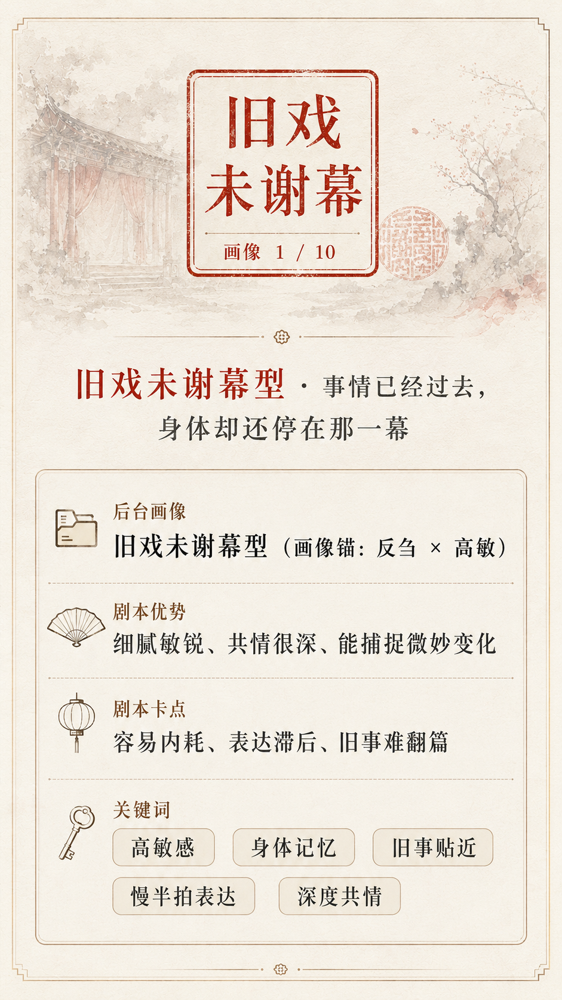
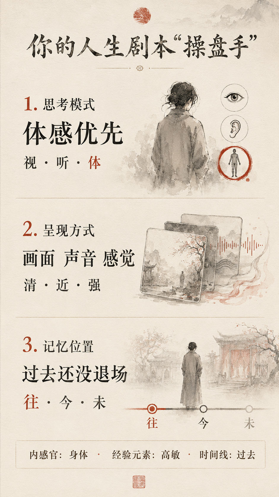
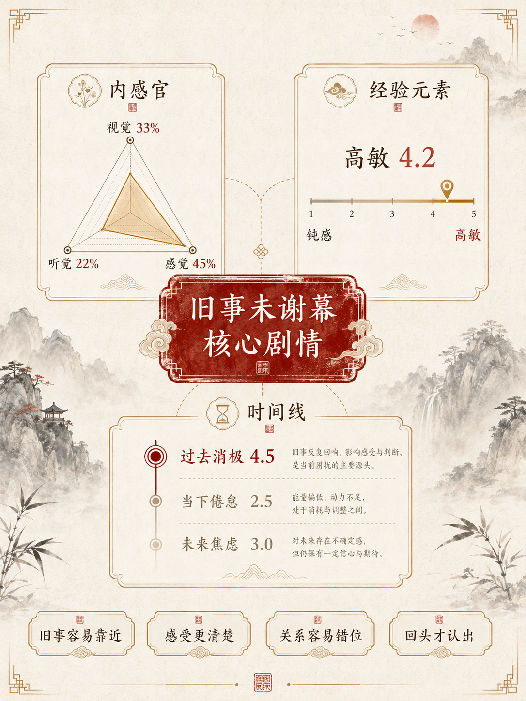

不是一下子就难受起来，而是有一条很短、很快的内在路径。
"生命只给你时间与空间。如何填满它，是你自己的事。"
—— 李中莹


这份报告对你的解读，源于你当前各项得分共同指向的一条习惯路径，不是对你的定性判断。
"没有办法，使事情划上句号；总有办法，则使事情有延续的可能。"
—— 李中莹
你读的时候不用急着给自己下结论，先圈出一句最像你的话，再看后面给你的"办法"。
"你不需要做神。"
—— 李中莹

不是一下子就难受起来，而是有一条很短、很快的内在路径。
“重复旧的做法，只会得到旧的结果。”
—— 李中莹
这套反应方式，你可能已经很熟悉——某个气氛一来，某个开关自动启动，感受、判断、反应都跟着走。李中莹 NLP 把这个叫「自动分镜」——一套由信念、自我价值感和潜意识共同运转的程序，不需要刻意启动，它自己就会跑。
"你不用老是去问过去的为什么，你只要每天做一点让自己明天能够更加轻松快乐满足的事情就可以了。"
—— 李中莹
这套系统不是只有消耗，也不是单纯的天赋。它更像同一枚硬币的两面：贴得太近时，会耗能；用对地方时，会让你比别人更早看见关系里的细微信号。
代价孩子沉默或说"我不想说"时，旧感受容易被带近，你会先怀疑是不是哪里没做好。
天赋但你也更容易感到孩子没说出口的状态，能在他还没开口时，先接住一点信号。
代价对方一个沉下来的语气，可能让你先安静很久，自己消化半天，对方却只看见你的冷淡。
天赋但你也更容易捕捉到对方的委屈、疲惫和需要，只要不被旧戏牵走，关系会更容易被真实回应。
代价一首歌、一句话、某个相似气氛，都可能让旧事浮上来，占住当下的心神。
天赋但这也让你的记忆带着温度、颜色和感受，更容易在表达、创作和陪伴里拿出质感。
代价旧经验容易一起进入判断，让你多想几轮，也更怕重蹈覆辙。
天赋但这份谨慎也能帮你不只看眼前收益，而是评估一条路是否真的长期承受得住。
"你令我想到流水。流水很软弱，什么东西都能阻断流水，但流水总能无孔不入，最终到达它应到的地方。"
—— 李中莹
内感官，简单说，就是你在心里处理经验时常用的三条通道：画面、声音语言、身体感觉。它一般会出现在回忆旧事、想象未来、理解别人反应、复盘冲突和做决定的时候。它重要，是因为同一件事用不同通道处理，你的反应速度、表达方式和情绪残留都会不一样。
你的结果呈现为：内感觉 45% 为主导，内视觉 33% 居中，内听觉 22% 相对偏弱。这说明在压力场景里，你往往不是先用语言解释发生了什么，而是先接收到身体的紧、沉、堵，随后才慢慢补上画面和语言。
前面这组数据说的是：身体先接到信号，语言慢一步跟上。接下来先不急着判断“对不对”，而是看怎样做更有效。
把“一团难受”变成一个能被看见的信号。
停 10 秒，找身体最明显的位置：胸口、肩膀、喉咙、呼吸。
“我现在身体有点紧。”
“我需要一点时间确认，这是当下的，还是带过来的。”
分清眼前发生的事，和旧经验带来的叠加。
问自己两句：现在身体怎么了？我联想到什么了？
现在：胸口紧，呼吸有点顶住。
联想：这句话让我想起以前类似的场景。
别等完全想清楚才开口，先给关系一个缓冲。
先说明“我在整理”，不是冷淡，也不是怪对方。
“我有点被触动，但还没想清楚，不是要怪你。”
“我需要缓一下，等会儿再跟你说。”
顺序不要反过来：先处理身体信号，再区分现在和旧经验的叠加，最后再进入关系表达。这样做不是压掉敏感，而是让敏感慢慢变成你可以使用的信息。
不是等对方自动懂，而是先把“我现在需要什么”说清楚。话不用长，能改变互动方向就够了。
对方不是一定不在乎，他可能只是习惯用“解决问题”表示关心；你也不是一定在翻旧账，你只是需要让旧戏真正落幕。把差异说出来，才有机会从互相误解，变成互相配合。
这份报告到这里，你已经把这出戏从头到尾看了一遍——触发它的线索，支撑它的信念，消耗你的地方，还有属于你的天赋。能看见，就是改写的开始。李老师说得直接：台词是练出来的，不是等想清楚了才能说的。从下面这几句话开始，一次一句，一次一个场景。
"过去无法改变，但未来永远有机会。"
—— 李中莹